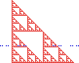

| Denote the Sierpinski gasket by S and the Cantor set by C. |
| Recall the intersection formula: for almost all placements of
S and C in
|
| dim(S ∩ C) = dim(S) + dim(C) - E |
| For E = 2 this becomes |
| dim(S ∩ C) = Log(3)/Log(2) + Log(2)/Log(3) - 2 ≈ 0.261 |
| For E = 3 this becomes |
| dim(S ∩ C) = Log(3)/Log(2) + Log(2)/Log(3) - 3 ≈ -0.784 |
Return to Dimension Algebra Exercises.